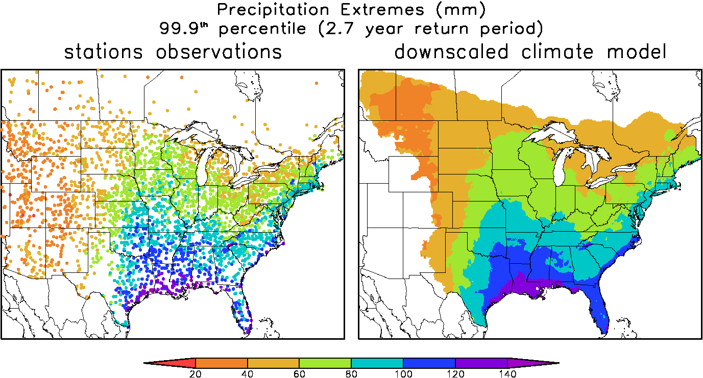
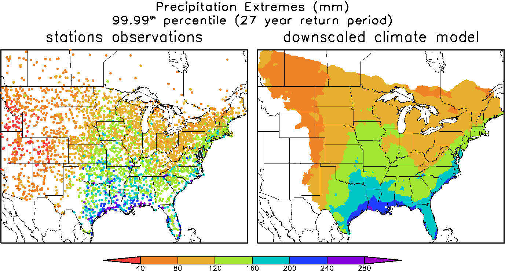

Downscaled Climate Projections
Performance in Reproducing Current Climate
Typically one of the most difficult statistics to reporduce are precipitation extremes. In the two figures below, we show the 99.9th and 99.99th percentile daily precipitation amounts estimated from observations and from a downscaled climate model. The climate model extremes are taken directly from the Probabilty Density Functions (PDFs) so we expect less small-scale sampling noise in these plots.
 More comparison figures will follow in the future.
Home